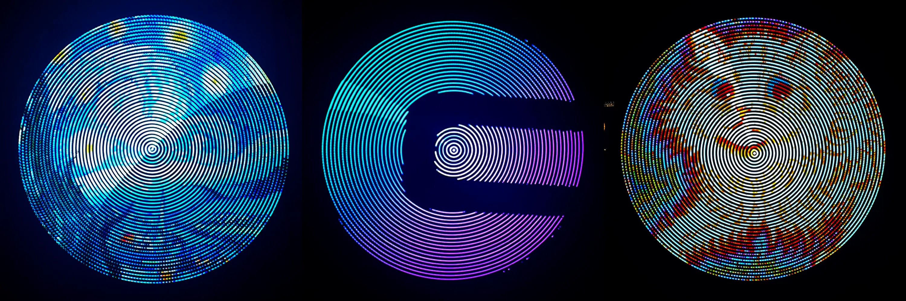
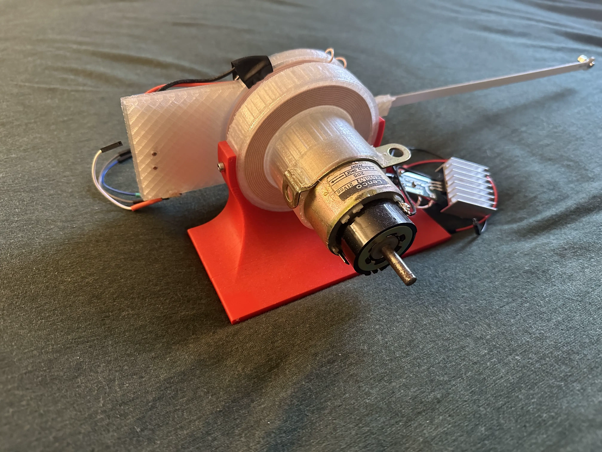

Holographic POV Display
12.16.2022Paint light into ethereal floating images using a Raspberry Pi Pico MCU.

This article was published as the first article of Circuit Cellar Magazine issue #400!
Project Introduction
Holograms are a common fixture in science fiction, yet remain somewhat of a unicorn for the tech world. While building a “real” hologram might be out of reach for today's technology, we can still strap a horn to a metaphorical horse and make it feel pretty. Persistence of Vision (POV) Displays offer one method by utilizing a psychological trick to construct floating images out of light.
Persistence of Vision (POV) refers to the brain's tendency to perceive light for a brief period after it stops entering the eye. Through clever engineering, this effect can be exploited to “paint” light onto thin air. A quickly rotating series of LEDs appear to the brain as a full circle, and by changing the colors emitted by the LEDs we can create the illusion of floating holographic images. These images are ghostly, beautiful, and mesmerizing, perfect for advertising, art installations, or product presentations.
The unique design challenges associated with creating a high-speed, fully wireless (both for power and communication), and low-budget POV Display led us down many interesting paths in a variety of engineering disciplines. Our electronics harnessed the Raspberry PI Pico microcontroller to handle driving the display, and we created custom printed circuit boards (PCBs) to house the microcontroller, LEDs, and accompanying electronics. The whole system is powered inductively, removing the need for any wires. Our software consists of embedded C programming for high-speed operation of the Pico, along with a Python TCP client to send images to the display over the WiFi. Finally, our mechanical design uses 3D printed components to enable safe, high-RPM operation.
Electrical Overview
Figure 2: Our PCBs laid out in KiCad
In a system experiencing high accelerations, Printed Circuit Boards (PCB's) are king. Made from high-strength PTFE substrate, these boards can stand many thousands of G's, and soldered connections are extremely resilient to the characteristic forces of a POV display. They are also lightweight and slightly flexible, making them perfect for our use case. Figure 2 shows the two PCB's we decided to make for our design.
We call the first PCB the arm, shown lit up in Figure 3. The arm holds 40 surface-mounted APA102 LED's and provides standard 0.1-inch headers for interfacing with the LEDs. We chose the APA102 LEDs because they use a two-wire SPI protocol to communicate with the control board. This allows communication rates of up to 20 MHz, more than fast enough for our application. We previously experimented with the popular WS2812B LEDs, but these LEDs are capped at a 1 KHz refresh rate due to their single-wire protocol. This would limit the radial resolution of our display. We added an M3-sized hole on each end of the arm, one to connect the arm to the rest of the rotor, and one to attach weights to balance the system.
Figure 3: The arm lit up
The second PCB, shown in Figure 4 is the control board. The control board holds the Pico W and the power/logic electronics to facilitate communication with the LEDs and hall effect sensor. The Pico W uses 3.3v logic levels while the APA102 LEDs expect 5v logic. To remedy this we included a 74AHCT125 Logic Level shifter. This shifter converts our 3.3v signal to 5v, and is fast enough to deal with our 20 MHz SPI signals. A 47 uF decoupling capacitor is placed across the power supply, which is especially important when dealing with the rapidly changing power requirements of the LEDs. We also added a Schottky diode between the power rail and the Pico's VSYS pin. This diode allows the board to simultaneously take power from screw terminals and the Pico's onboard USB without damaging the Pico or the power supply. To facilitate programming we connected a push button between the RUN pin and ground. Pulling the RUN pin down causes the Pico to enter boot select mode and appear as a programmable USB device. Finally, we wired the hall effect sensor to a GPIO pin of the Pico with a 10k pull-up resistor. Note that the sensor is active low.
Figure 4: The Control Board PCB & Schematic
All PCB's were designed using KiCad, an open-source ECAD software.
One of the key design choices for a POV display is how to power the rotor. Because it spins 360 degrees, wires cannot be safely routed between the stationary stand and mobile rotor. There are three traditional approaches to this issue: a slip ring, an onboard battery, and an inductive power supply. Slip rings use brushes and contacts to create connections that can “slip” past each other and rotate. However, they are notoriously unreliable, cause sparks under high load, wear over time, and add friction. An onboard battery adds weight to the rotor and is a potential safety concern at high speed. Finally, there are inductive power supplies. Due to the widespread adoption of wireless charging technology, inductive coils are readily available online. They are frictionless, robust, and are by far the "slickest" solution if that matters (it does, let's be honest). We picked up a $25 system on Amazon complete with a 5V level converter hardware, shown installed on the arm in Figure 5.
Figure 5: Inductive coil mounted on the bottom of the arm
Finally, we need to spin the rotor. We used a spare motor found around the lab, but most motors will do. Our motor used 18W to achieve 1800 RPM (equivalent to 30 fps), so look for something in that range if you build this project yourself. This motor is powered by a motor speed controller built from a second PI Pico and an HBridge. This allowed us to control the motor speed precisely, but a bench supply would also suffice.
Mechanical
We started the design process by working on the rotor. As mentioned in the previous section, the PCBs themselves were included in the mechanical construction of the rotor. To supplement the PCBs, we needed to create a superstructure that holds the PCBs together and connects them to the motor shaft. This structure also served to mount the inductive coil. Along with the functional requirements, we want to keep weight to a minimum and make the design modular so that design iterations are faster.
Figure 6: The rotor assembled
Our design is 3D printed with minimal infill to reduce weight. It is only a couple of millimeters thick and is designed to use the PCBs to supplement its strength. Components are connected using M3 screws that are threaded directly into the PLA. With proper print settings, these connections are remarkably strong, and more than enough for the mostly lateral load of this application.
To interface with the motor, we created an adapter that fits the motor shaft on one end and supplies a 1” square hole pattern on the other. We made this a separate component so that we could quickly iterate designs in case the fit on the motor was too loose. The final product is shown in Figure 6.
The next step was creating a stand to house the motor and inductive coil. The inductive coil has a specific range that it can safely operate in, and we used the stand to enforce this distance. The stand also allows us to clamp the system to a table for testing.

Figure 7: The final motor mount
The design is split into two parts to reduce reprinting time. All parts are printed in PLA with 20% infill, which was plenty strong enough for the application. PLA is not ferromagnetic, which means that it does not interfere with the inductive power supply. The motor mount is shown in Figure 7.
Software Overview
Using just 40 independently addressable LEDs, we were able to create the illusion of 12000 pixels at over 30 fps. The display is 26" in diameter, and updates over wifi from our custom python client.
To display an image, we first use a Python program running on a laptop to convert an image into the display’s polar coordinate system. This data gets sent over TCP to the Pico W, where it is prepared to be displayed. We created a browser-based GUI to streamline the process, accepting images or GIFs and handling the full transmission cycle.
The Pico measures its rotational speed using a Hall Effect sensor and a magnet mounted to the stand. With this information, it displays the pixels for the “slice” of the image corresponding to its current position in the rotation.
The microcontroller code executes two processes, each running on its own core. One process handles TCP exchanges and writes the image array with new pixel data. The other process reads the image array and updates the LEDs to maintain a complete image. By using both cores we can concurrently receive TCP messages and control the LED strip, allowing for seamless operation.
Python Code
Our Python code creates an HTTP server that allows users to submit images to be shown on the display. The front end (shown in Figure 8) uses simple Javascript to POST the user's image to the server, where the server downloads and caches it.
Figure 8: The front end for our Python code
Raster images are typically displayed on rectangular screens, utilizing a rectangular array of pixels. POV displays are unique in the radial arrangement of their pixels, meaning we must pre-process the images from the canonical rectangular system into the display's native polar coordinates.
Our approach is virtually overlaying the location of the display’s pixels over the rectangular image. We chose to center the circle and have its diameter be the same as the smallest dimension of the source image. This focuses on the central parts of the image and maximizes the amount of the display utilized. Any pixels outside of the circle defined by this radius are ignored. For each of the pixels on the display, the closest pixel of the rectangular image is selected, and that color is used for the radial representation.
When processing the image, we must decide on a resolution. Because the number of LEDs on the arm is physically determined, we can only control the angular resolution. This is the number of times LEDs must change color while traveling in one rotation. While higher angular resolution results in a clearer image, it also strains the processing time of the Pico and the refresh rate of the LEDs. Our experimentation showed diminishing returns over 300 LED changes per rotation, so we stuck with that resolution for our final results.
The pixels are then pushed onto an array that stores the polar image. The array stores a pixel as (THETA, R, COLOR) rather than the traditional (X, Y, COLOR). Theta represents which angle of the arm contains the pixel, R represents the distance from the center of the arm in terms of the number of LEDs, and COLOR is an RGB triple.
# Sample the image at each point that an LED will update at
# We calculate this point in polar space, convert it to rectangular, then sample the image at that point
# The results are stored in rad_img, which is a polar representation. Essentially (theta, r)
for t in range(DIVISIONS_PER_ROTATION):
for l in range(NUM_LEDS):
# What angle are we looking at (in radians)
theta = t * ((2 * numpy.pi) / DIVISIONS_PER_ROTATION) + offset
# How far out are we (from 0 to 1)
r = l / NUM_LEDS
x_raw = numpy.cos(theta) * r
y_raw = numpy.sin(theta) * r
# Get the rectangular coord for the current polar coord, centered on the image and going to the edges
x = numpy.interp(
x_raw, [-1, 1], [(width / 2) - (min_dim / 2), (width / 2) + (min_dim / 2)])
y = numpy.interp(
y_raw, [-1, 1], [(height / 2) - (min_dim / 2), (height / 2) + (min_dim / 2)])
x = int(x)
y = int(y)
assert x < width and x > 0
assert y < height and y > 0
rad_img[t][l] = img_array_np[x][y]
This shows the python code for our implementation, and Figure 9 shows what the processed images look like at varying radial resolutions. We were able to run up to 300 LED changes per rotation, but reasonable images can be generated with 180 changes or less.
Figure 9: A test image at various angular resolutions
Once the image is processed, we must send it to Pico. This is handled using a TCP connection created by the Socket Python module. A laptop running the Python code presents itself as a TCP server, to which the Pico automatically connects. Once the connection is established, we can send our image as a stream of bytes to the Pico.
Pico Code
The Raspberry Pi Foundation provides an excellent SDK for programming the Pico, including all of the build tools necessary for deploying code and a collection of drivers for the various peripherals of the RP2040. Our work makes extensive use of this SDK, along with the popular Protothreads threading library for concurrent programming.
The RP2040 included on the Pico is dual-core processor, which is perfect for our use case. The display can be broken down into two high-level components: networking (talking to the laptop over wifi) and control (controlling the LEDs and ensuring timing consistency). Running each component on a separate core separates the interrupt-heavy and asynchronous requirements of network programming from the timing critical and processor-greedy requirements of peripheral control. Additionally, because the control logic only reads data from shared memory (never writing) there is no concern over race conditions.
Core zero is responsible for the networking code, and starts life by initializing its peripherals. The networking on the Pico W is handled by an onboard CYW43439 chip, which has a handy driver packaged into the Pico SDK. After initializing the RP2040’s GPIO pins, the CYW43439 driver is initialized and used to connect to a provided wifi SSID. We then register our custom interrupt handlers to manage TCP-related messages received by the wifi chip.
static int dump_bytes(const uint8_t *bptr, uint32_t len)
{
unsigned int led_i;
unsigned int rot_i;
unsigned char rgb_i;
uint8_t x;
for (unsigned int i = 0; i < len; i++)
{
x = bptr[i];
rgb_i = arr_i % 3;
led_i = (arr_i / 3) % LED_NUM;
rot_i = (arr_i / (LED_NUM * 3)) % ROTATIONS;
led_array[rot_i][led_i][rgb_i] = x;
arr_i++;
}
return rot_i + 1;
}
When the interrupt signifying a TCP transmission is triggered, data is fed to the interrupt as a packet of bytes (shown in snippet above). While TCP does guarantee the delivery of data, it does not guarantee how many packets the data will be formatted into when sent. This makes it the developer's responsibility to ensure that all data is received even if it is broken into many packets. This problem can be handled by including a header with the message length, but our packet size is always the same (whatever is required by the resolution of the image) and can be agreed upon before the code is flashed to the Pico. Because the size of an image is known, the Pico continues listening for packets until enough data has been received. It then rebuilds the 3-dimensional polar array which represents the image, identical to the array sent from the laptop’s python client. This array is stored in memory accessible to both cores, making it available to core one’s display logic.
Core one tackles the issue of controlling the LEDs. The core first initializes the relevant GPIO pins for SPI communication, then outputs a test pattern to the LEDs as a visual indicator that initialization was successful. It also registers an interrupt handler for the rising edge of a Hall effect sensor, which is explained below.
Using the image information supplied by core zero, the image is almost ready to be displayed. We still need one more piece of information: the current position of the arm. To display a steady image, we need to know what “slice” of the image is currently being displayed. Instead of trying to directly measure the position of the arm, we use some mathematical trickery to form an estimate. By using a hall effect sensor to determine when the arm passes a magnet mounted to the base, we get a sub-millisecond measurement of the period of the arm's rotation and stable a zero point in the viewer's frame of reference. Given that the arm is rotating at a constant speed, the amount of time that each “slice” of the image should be displayed is the period divided by the number of pixels per rotation. This is easy to keep track of using an MCU, and we accomplished it using the yield functionality of the Protothreads library. We determined the yield time using the following formula:
yieldtime = (period of rotation / changes per rotations)- LED update time
The hall effect sensor we chose is active low and pulls a GPIO pin to ground whenever the south pole of a magnet gets close. We set up a falling edge interrupt on the pin, triggering whenever the sensor moves past the stationary magnet on the motor mount. When the interrupt is triggered, the period of rotation is calculated by subtracting the last activation from the current time. We also check that the period is a reasonable value (> 10000 us), which helps us reject any high-frequency false positives. We also indicate that we have hit our zero point by setting the relevant flag.
Finally, we can update the LEDs! We chose APA102 LEDs because they use the high-speed SPI protocol to communicate. A common pitfall of POV display design is attempting to use the ubiquitous WS2812b LEDs (also known as Adafruit NeoPixels). These LEDs use a single wire control protocol and don’t have the required bandwidth for high speed refreshes. The SPI interface has the additional benefit of allowing us to use the Pico’s SPI peripheral to simplify the driver. The LEDs expect packets that are broken into "frames" of 32 bits. Each message begins with a start frame of 32 0's and ends with an end frame of 32 1's. In between, each frame represents the data for a single LED in the strip. A LED frame starts with 111, then is followed by five bits representing the brightness of the LED. This is followed by 8 bits for each of blue, green, and red, giving 256 values for each.
The LEDs are wired in series, with the SCK and MOSI lines of the previous LED leading into the next. When an LED receives a packet, it updates its state, strips the first LED frame off the packet, and then shifts the new packet out of its output SCK and MOSI lines. By doing so the entire strip can be updated from a single message sent to the first LED.
Results of the Design
Figure 10: A variety of images on the display
We can quantify the performance of our display in terms of several metrics:
-
Resolution Rotational displays operate slightly differently than traditional grid-based displays. Each "pixel" is actually an arc, and its position is defined in terms of radius and angle rather than x and y. For a POV display, the resolution on the radius is the number of LEDs on the arm, so 40 in our case. The angular resolution depends on how many times the LEDs update per rotation. We experimented and determined that 300 updates produced vivid images without overwhelming our microcontroller. Multiplying these quantities gives 12000 pixels, which is much higher than comparable DIY systems.
-
Size POV displays become exponentially more complicated as they grow larger. Large radius results in higher acceleration, more LEDs required for equivalent pixel density, and more power required. Many POV projects are under 6" in diameter for this reason. Because our goal was to create a visually impressive product, we decided to aim for around the size of a large poster. This resulted in a 26" diameter display. This posed many technical challenges, but the result is absolutely stunning.
-
Image Stability Due to the high speed of the system and the noisy signals generated by the hall effect sensor, it can be difficult to determine the exact rotational frequency. This can cause the image to jitter or process around the display. Our display dealt with these issues remarkably, with almost no visible jitter. Any noise was constrained to within one angular pixel, or under two degrees.
-
Usability Our design emphasizes usability and consistency. Good build quality ensures that repeated use doesn't cause incremental damage, decreasing the life span. The system is powered by a single wall outlet, so no specialized hardware is required. It is resilient to fluctuations in motor speed, so replacement or modification is easy. The custom python interface allows for use of the display with any image you choose, and updates can be sent over wifi without slowing down the display.
Future Work / Improvements
One notable issue with our display is the spacing between the pixels. Because of the physical requirements for soldering the arm, the LEDs have a small gap between them. This causes circular interruptions in the image and could be remedied by using two staggered rows of LEDs.
We also hope to improve the interface for transmitting images and video. It would be interesting to write a display driver that allows the display to mirror a computer screen. This would make the display interface even more intuitive.
Special Thanks
Special thanks to Cornell’s Professor Hunter Adams and Professor Bruce Land for all of their help.
Hunter and Bruce, respectively, shown on the display
Source Code and Design Files
Interested in building your own display? All of our code and design files can be found on my github: https://github.com/usedhondacivic/ECE-4760-POV-Display